一条链路
需求、阶段、文档、工单与审批共享同一组 ID 与事件时间线。任何界面都能回到需求本身。
从设备绑定、需求澄清、过程文档，到 CRQ、ChaRM 与 VSCode 开发，再到上线审批。重构后的工作台把业务、IT 与 Super Agent 放进同一个可追溯的界面。
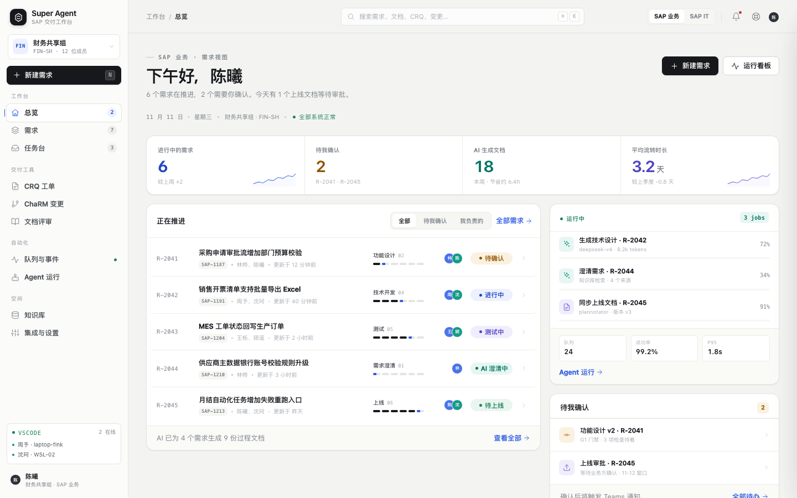
现状里，需求在 SAP、澄清在邮件、工单在 SolMan、开发在 VSCode、审批在 Teams。重构的第一件事，是把状态与上下文收回到一个连续界面里。
需求、阶段、文档、工单与审批共享同一组 ID 与事件时间线。任何界面都能回到需求本身。
纸张感的浅色底、细分隔线与克制的色彩。颜色只用于表达状态，不用来装饰。
一次性链接、指纹绑定、工件版本、门禁决策、接口调用与 Agent 运行都留下不可变记录。
AI 推进文档、检索知识库、准备工单，但每个关键门禁都由人确认。人始终拥有最后一步。
角色与系统被串成一条流水线。每一步的产出都成为下一步的输入，失败与等待在同一个地方可见。
指定负责人、描述问题、上传附件。设备通过一次性链接绑定后免登录。
表单 / 附件 / 负责人检索知识库，生成澄清问题与过程文档。门禁由人确认，版本不可变。
RAG / 过程文档 / 门禁任务被派发到在线工作区，上下文包与 Agent / Skill 自动同步到本地。
Extension / 上下文包 / Agent模板驱动的多接口编排创建外部工单；Change Request 等待 Basis 审批。
模板 / 编排 / Basis上线文档生成后邮件通知业务确认，确认后提交 CRQ，所有投递可查。
上线文档 / 邮件 / CRQWeb 工作台覆盖业务与 IT 两种角色；VSCode 扩展把需求上下文与 Agent 能力带到开发者手边。点击任意卡片可直接进入可交互原型。
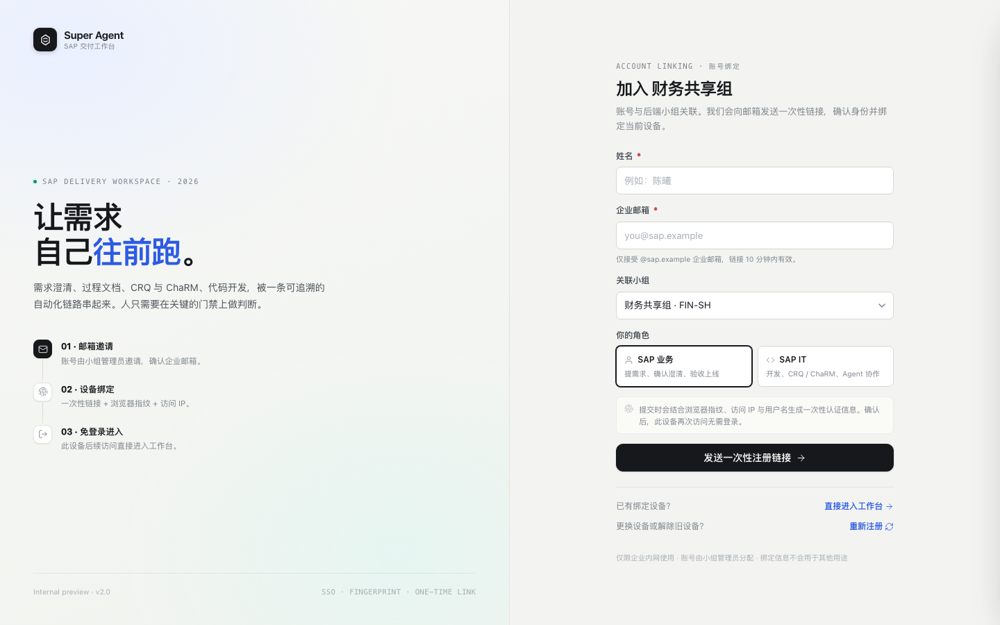
AUTH邮箱邀请、一次性链接、浏览器指纹与 IP 校验，绑定后设备免登录。
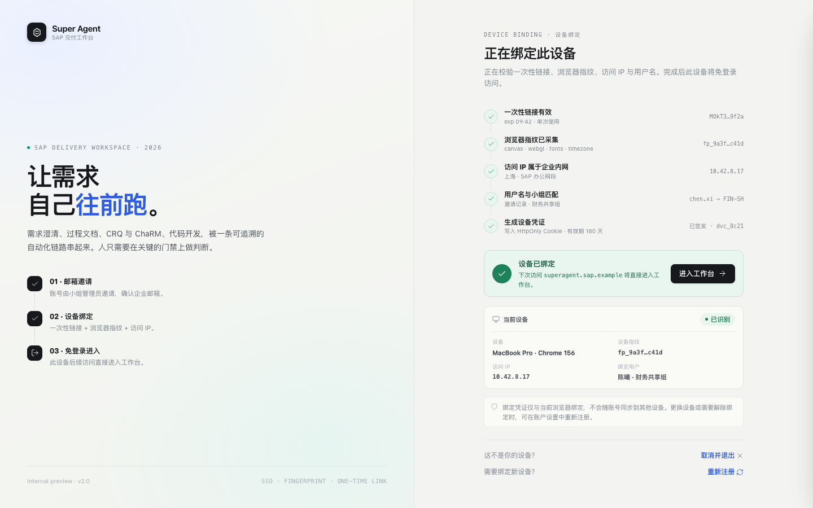
AUTH逐项展示链接、指纹、IP、用户名的校验过程，绑定结果清晰可见。
待确认、AI 运行、上线窗口与队列健康集中在一个安静的首屏。
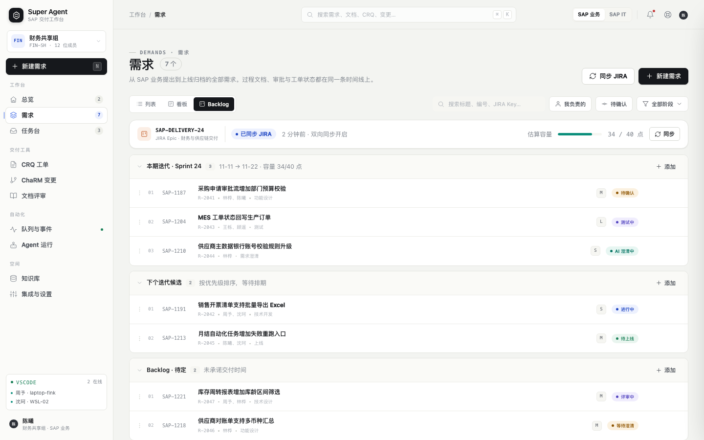
DEMANDS列表、看板、Backlog 三种视图；JIRA 双向同步，可直接排期。
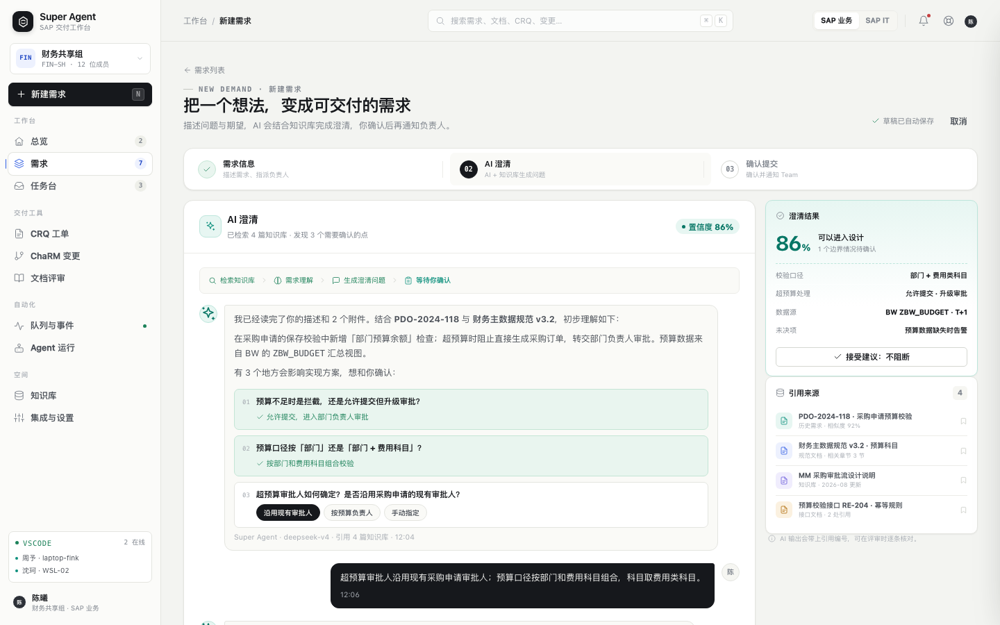
AI结合历史需求与规范生成澄清问题，每个结论都可追溯到引用来源。
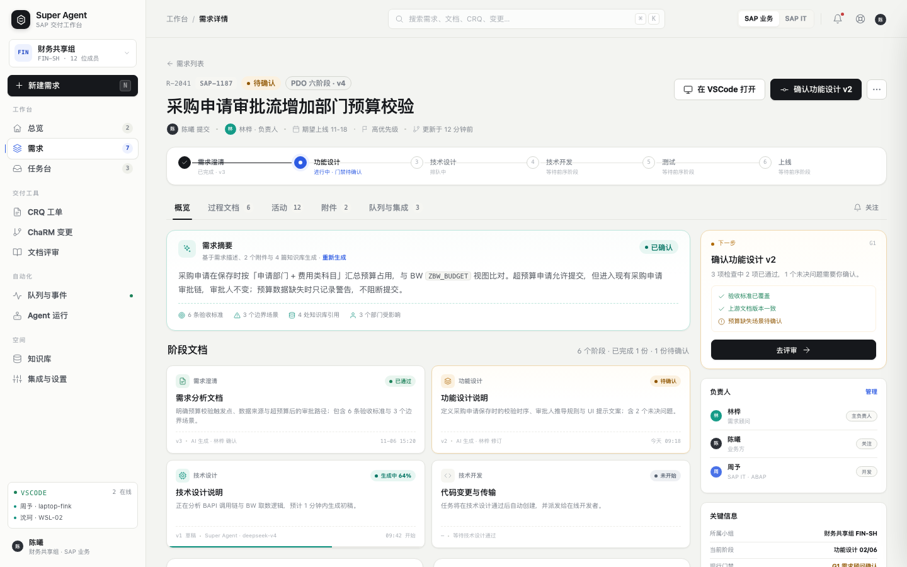
DETAIL六阶段推进、过程文档、门禁与关联 CRQ / ChaRM 在同一条时间线上。
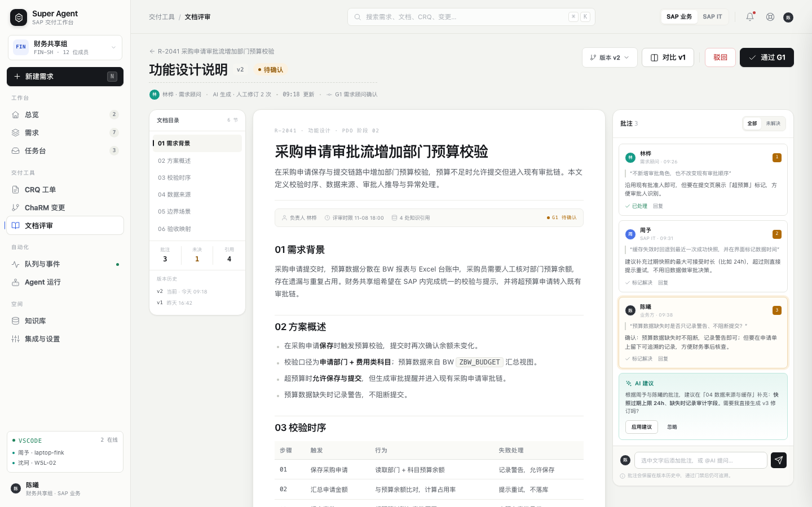
REVIEW参考 Plannotator 的轻量批注：行内标记、版本对比、门禁检查与 AI 建议。
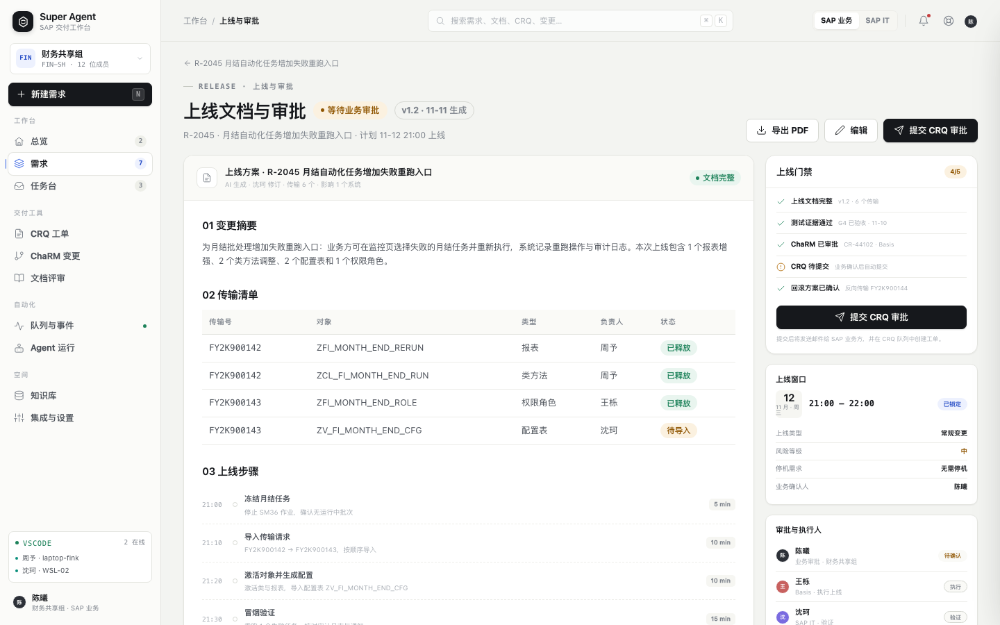
RELEASE上线清单、传输、回滚方案与业务邮件审批，确认后提交 CRQ。
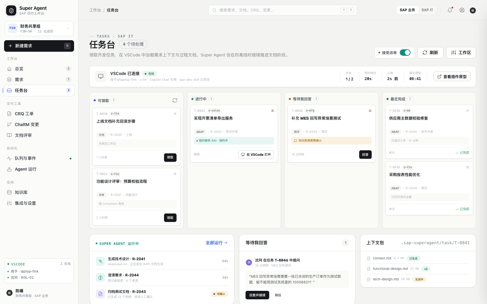
TASKS可领取、进行中、等待回答与已完成；租约、执行器与上下文包一屏可见。
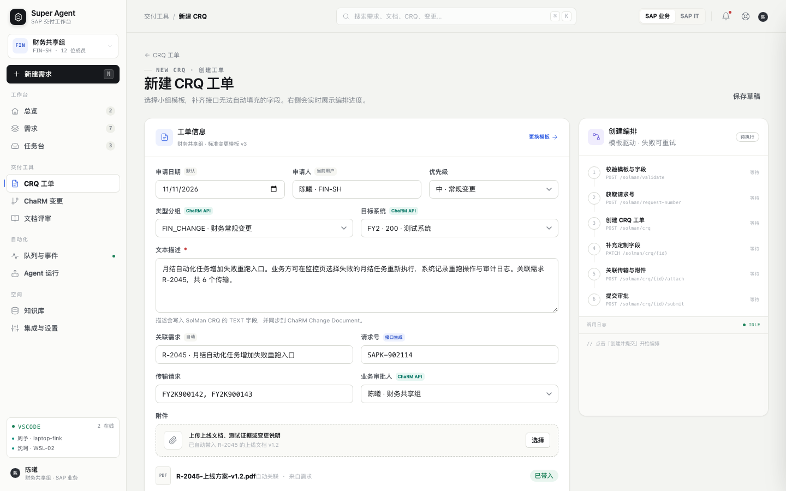
CRQ模板按小组与版本管理；接口不完整的字段通过多步编排补齐，过程可重试。
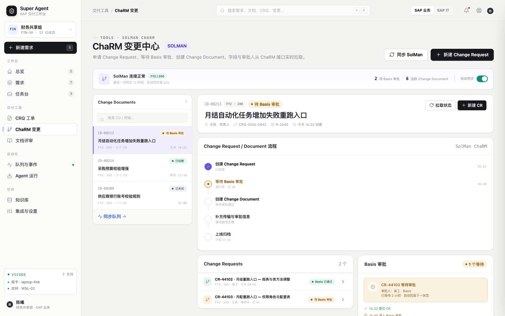
CHARMChange Request、Basis 审批、Change Document 与轮询状态同步。
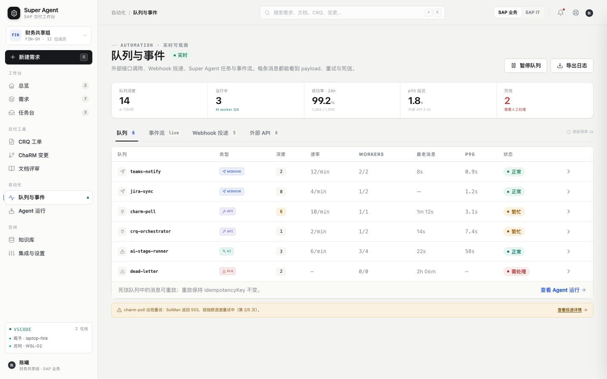
OPS队列深度、事件流、Webhook 投递、外部 API 与死信，全部实时可查。
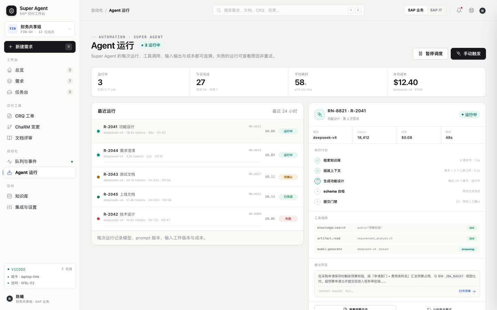
AGENT执行计划、工具调用、tokens 与成本；失败可从检查点重试。
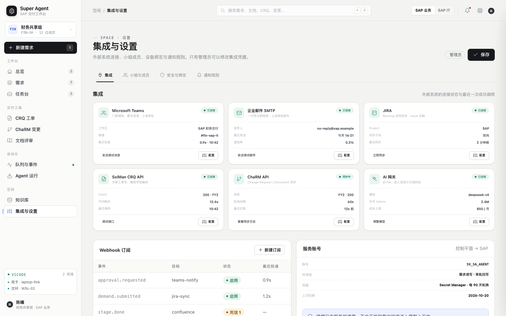
SETTINGSTeams、SMTP、JIRA、SolMan、ChaRM 与 AI 网关的连接状态；设备与通知策略。
不是聊天机器人，而是任务客户端 + 本地能力宿主。任务箱、需求详情、文档同步、Agent/Skill、ChaRM SSO 与 Copilot 协作都在编辑器里完成。
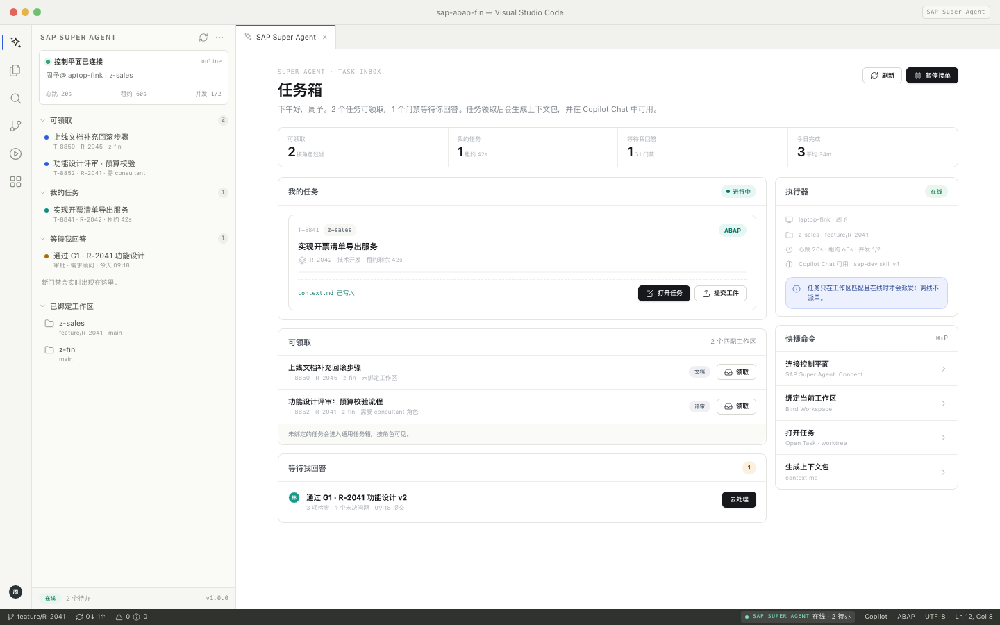
一套可落地的设计 token：纸张底色、墨色文本、单一主色与四类语义色。字号、间距、圆角与动效都服务于可读性与节奏。
从重构目标、信息架构到状态机、接口契约与 VSCode 插件设计，文档描述的是已经构建出来的界面。